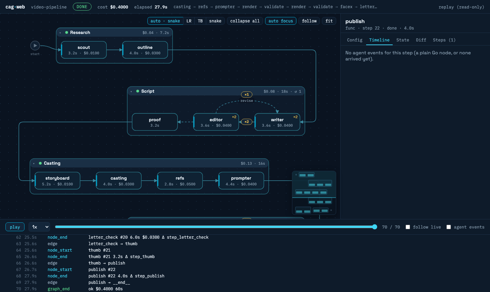
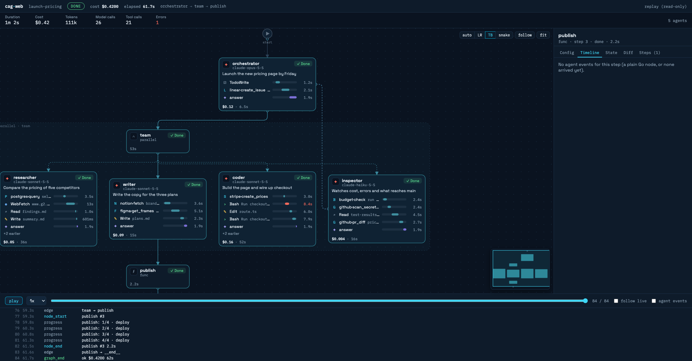

What you can build
The agent loop stays in the CLI, so you keep upstream models and tools. The SDK is everything around it.
Review/fix pipelines // graph
Plan, code, review, fix, docs. Conditional edges, loops with a step guard, parallel fan-out, stage groups.
Human-in-the-loop // interrupt
A node pauses to ask, or to put files in front of a reviewer. The checkpoint is plain JSON; resume from any front end.
Crash-proof long runs // durable
Every node commit is logged. Recover in a fresh process, resume the agent's CLI session, or fork from any commit.
Agents with real tools // tools
Your Go functions as MCP tools, in-process, behind a bearer token. Typed in and out, schema inferred.
Fleets // fleet
A dependency DAG of tasks across workers, one git worktree each, over local, docker or ssh, with a spend cap.
Tested agents // eval
Trajectory, ROUGE and judge scoring, pass@k, simulated users, and goldens replayed offline for free.
Graphs of agents, with a loop that stops
A review/fix loop is three edges and a counter. The packet below is a work item following the real edges; the dashed edge is the reviewer sending it back.
// plan → code → review, fix loop, docs
g := graph.New[State]("coding")
g.AddNode("review", graph.Agent(reviewer, buildReview, saveReview))
g.AddNode("fix", graph.Agent(coder, buildFix, countRound))
g.AddConditionalEdge("review", func(s *State) string {
switch {
case s.Approved: return "docs"
case s.Rounds >= 3: return graph.End
}
return "fix"
}, "docs", "fix", graph.End)
run, _ := g.Compile(graph.WithMaxSteps(20)) // validates every edge
st, report, err := run.Run(ctx, State{Task: task})Validated at compile time. Missing nodes, dangling edges and unreachable steps fail Compile, not the third hour of a run.
Parallel and grouped. AddParallel fans out on copies of the state and merges. Group labels stages; the debugger draws them as collapsible boxes.
Ask a human. graph.Interrupt("which format?") returns a JSON checkpoint; Resume continues with the answer. InterruptReview does it for a list of files, and EmitArtifact publishes images and reports a node produced.
Cost per node. The Report carries duration, spend and errors for every step.
Durable runs, without a server
Attach a checkpoint store and every node commit is appended to a log before the run moves on. A killed process loses at most the node in flight.
store, _ := graph.FileStore("./checkpoints")
run, _ := g.Compile(graph.WithCheckpointStore(store))
st, report, err := run.Run(ctx, State{Task: task})
// report.RunID names the run. After a crash, in a new process:
st, report, err = run.Recover(ctx, runID)
// side effects stay safe on the re-run:
payments.Charge(ctx, amt, graph.IdempotencyKey(ctx))
// what-if: copy history up to commit 12, edit, continue
run.Fork(ctx, runID, 12, "retry", func(s *State) { s.Rounds = 0 })Recover restarts at the node that was in flight and resumes its agent session with --resume and a continue prompt.
Idempotency key is stable across the re-run and different on each loop iteration, so an external system sees one charge.
Fork is rollback and what-if: history is never rewritten, the new run gets its own id.
Guarded. A graph edited since the run started is refused with ErrTopologyChanged. cag runs <dir> lists runs as running, crashed, paused or done.
r, _ := g.Compile()
w := worker.New(c, temporal.TaskQueue(r), worker.Options{})
temporal.Register(w, r, temporal.WithHeartbeat(30*time.Second, 10*time.Second))
run, _ := temporal.Start(ctx, c, r, State{}, temporal.StartOptions{ID: "job-1"})
final, res, err := temporal.Wait[State](ctx, run)
// graph.Interrupt pauses it; temporal.Answer(ctx, c, "job-1", "yes") resumesMulti-machine durability. The temporal/ module runs each node as an activity and the loop as a workflow. A worker crash re-runs only the node in flight.
Same session. A retried agent node continues its Claude session through heartbeat details, not from scratch.
Separate module. The core takes no Temporal dependency. Limits: no continue-as-new yet; failed-attempt cost is not in the report.
graphweb: watch a run, or replay one
A web debugger for graph runs, live or from a journal or checkpoint store. It binds to loopback, checks the Host header, and guards controls with a random token.


graph.Watch link from an observer agent.See the run
Topology with collapsible stages, agent cards with per-tool-call timing, a run metrics strip, loop counters, observer links via Watch, a follow camera and a minimap. Snake, LR and TB layouts.
Inspect a node
Agent events, state before/after as a diff, the effective runner config (secret-free), and artifacts as a gallery.
Steer it
Set breakpoints, pause and step, and answer interrupts and reviews in the browser, via RunInteractive.
# live, from the examples
go run ./examples/pipeline -web 127.0.0.1:8799
# replay a journal, or a durable checkpoint store
cag web --replay run.jsonl --open
cag web --replay ./checkpoints --run <runID>
# HTML trace of recorded runs
cag trace runs/ --openEvals that run in go test
Score trajectories and answers, repeat flaky cases, simulate the user, and turn any recorded run into a golden.
eval.RunT(t, set, eval.RunnerAgent(r, build), eval.Criteria{
TrajectoryThreshold: eval.Threshold(1.0), // Exact / InOrder / AnyOrder
ResponseMatch: eval.Threshold(0.3), // ROUGE-L
Judge: eval.ClaudeJudge(judgeRunner, eval.JudgeSamples(3)),
MaxCostUSD: 0.50,
})- Trajectory matching: exact, in order or any order; ignore or subset arguments.
- Scoring: ROUGE-1/L, regex, an LLM judge with a median over n samples, and yes/no rubrics with a breakdown.
- Flaky agents: repeats with a pass-rate threshold,
pass@k,4/5in the report. - Multi-turn: scripted or LLM-driven simulated users over a runner or a live client.
- Budgets and goldens: cost, tool-call and time limits;
CaseFromRecordingandFromRecordingDirfor a whole graph run.
Permissions and safety
Deny by default, in Go, with the audit trail. Parsers and matchers are fuzzed because a policy bug is a security bug.
p := &permissions.Policy{
Rules: []permissions.Rule{
permissions.Deny("Bash(rm *)", "no deleting"),
permissions.Allow("Bash(git status*)"),
permissions.Allow("mcp__calc__*"),
permissions.Ask("Write", askUser),
},
Remember: true,
Audit: func(d permissions.Decision) { log.Printf("%s %s", d.Tool, d.Effect) },
}
c, _ := client.New(ctx, client.Config{CanUseTool: p.CanUseTool()})- First match wins, unmatched is denied. Claude Code pattern syntax:
Bash(git status*). - Compound-safe Bash. Allow needs every segment of
a && b | cto match and never allows substitution or redirection. Deny also sees$(), backticks, subshells and groups. - File tools. Allow never matches a path with
..; Deny sees the cleaned path. - Bearer-token MCP. The in-process tool server needs a random 256-bit token; no token, 401.
- Spend caps.
MaxSpendUSDacross retries, aSpendCapplugin, a fleet budget tracker. - Fuzz-hardened. 22 native fuzz targets in CI. Known limit: Deny does not see through
sudo,envorxargs; deny the wrapper too.
Anywhere the binary can run
Swap one field and the same code runs in a container or on another machine. Cancel actually stops the remote agent.
r := runner.New(
runner.WithTransport(transport.SSH{Host: "gpu-box"}),
runner.WithPreflight(true), // binary, version, auth
)
// also: transport.DockerExec{Container: "box"}
// transport.DockerRun{Image: "agent:latest"}- Local, docker exec, docker run, ssh. They only build the command; runner and client own the piping.
- Real teardown.
Terminatorstops the remoteclaudeand its children on cancel, timeout, abort andclient.Close, tagged byCAG_RUN_ID. - Preflight. Fails early with
ErrClaudeNotFound,ErrCLITooOldorErrNotAuthenticated; no tokens spent. - Fleets. Give each worker its own transport and one worktree per task.
A testing kit for your agents
Your unit tests need no credentials and cost nothing.
bin := clitest.FakeCLI(t,
clitest.Init("sess-1"),
clitest.ToolUse("t1", "Read", `{"file_path":"a.txt"}`),
clitest.ToolResult("t1", "hello"),
clitest.Result("done", 0.01),
)
r := runner.New(runner.WithBinary(bin))- clitest: fake
claudebinaries, or one built from a real recording; capture argv and stdin. - CheckInvariants: tool_use/tool_result pairing, one final result, one session id.
- Golden replay: run a whole graph offline from recordings; the pipeline and pizza examples do.
- Integration tests behind a build tag assert the effect against the real binary.
Compared with Google ADK
ADK is a framework that builds the agent loop for you. This is a client for an agent loop that already exists. We mirrored the parts of ADK worth having.
| Capability | Google ADK | claude-agent-go |
|---|---|---|
| Agent loop | Its own, model-agnostic | The real Claude Code CLI, driven as a subprocess |
| Language | Python (also Java, Go, TypeScript) | Go, typed, context.Context throughout |
| Workflow / graph agents | Yes | Yes: graph with loops, fan-out, groups, interrupts |
| Evaluation | Yes | Yes: trajectory, ROUGE, judge, pass@k, user simulation |
| Dev web UI | Yes (adk web) | Yes: graphweb, live and replay |
| Resume a crashed run | Via a session service you operate | A checkpoint log: FileStore or your own; no server |
| Multi-machine durability | Bring your own infrastructure | Temporal adapter: temporal/ module, one activity per node |
| Where it runs | Your process, or its hosted runtimes | Local, docker, ssh, with remote teardown |
| Permission policy | Callbacks and plugins | Rule policy in Claude Code syntax, plus can_use_tool and hooks |
ADK facts are from its public documentation and change quickly; check upstream before deciding. Failure modes reported against ADK are covered by regression tests here (retry cost, SIGTERM-trapping CLIs, sub-agent text leaks).
Everything the CLI can do, typed
The agent loop stays in the binary. The SDK gives you a clean Go surface over it — and over the control protocol most wrappers never reach.
In-process tools // tools
The agent calls your Go functions during a run. No server to deploy. Untyped, or typed with schema inferred from a struct.
Permission callbacks // can_use_tool
Decide allow / deny for every tool call, in Go, while the turn is paused. Deny actually blocks it.
Hook callbacks // PreToolUse
Run Go logic before a tool fires — observe it, rewrite its input, or block it outright.
Inline subagents // agents
Define subagents from Go — no files on disk. The main agent delegates to them through the Task tool.
Interactive sessions // client
One long-running process, many turns, full memory. Token-level streaming and interrupt-with-ack included.
One-shot runs // runner
Plain, JSON, or streaming — with cost, session id, tokens, and turns parsed for you. Resume across processes.
Claims you can re-run
Every capability has an integration test that asserts the effect against the real binary — a denied tool that doesn't write, a skill whose marker appears only when loaded, a subagent whose prompt reaches the answer.
live-binary integration tests that assert effects, plus >90% unit coverage and 22 fuzz targets.
- ✓Deny blocks. can_use_tool denial leaves the file uncreated, not just the callback fired.
- ✓Skills filter. A local skill's marker appears when allowed and vanishes when the allowlist omits it.
- ✓Subagents run. A token that exists only in the subagent's prompt reaches the final answer.
- ✓Resume continues. A second process recalls a codeword from the first session.
- ✓Tools execute. The Go handler runs and its result shapes the reply.